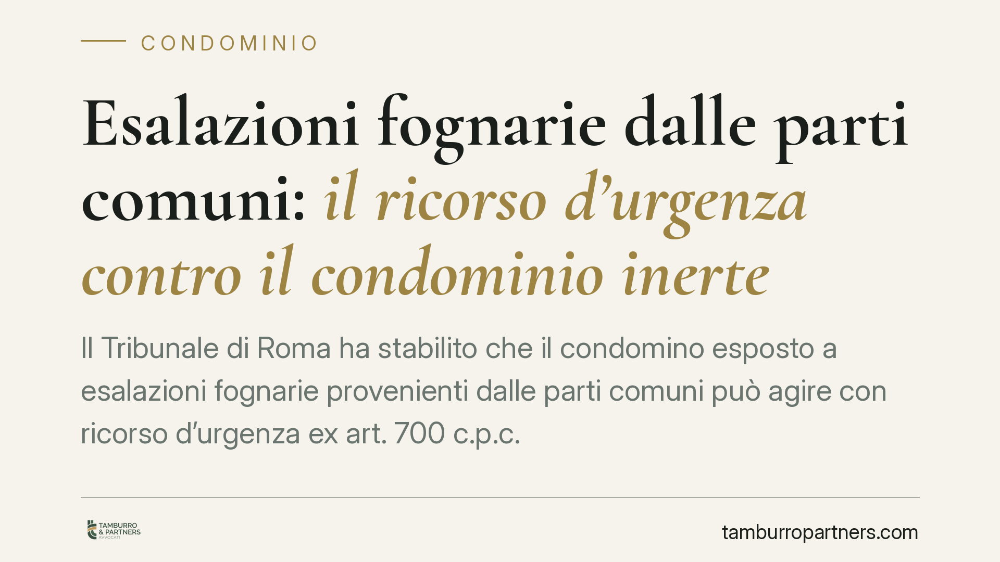

Esalazioni fognarie dalle parti comuni: il ricorso d'urgenza contro il condominio inerte
Il Tribunale di Roma ha stabilito che il condomino esposto a esalazioni fognarie provenienti dalle parti comuni può agire con ricorso d'urgenza ex art. 700 c.p.c. anche quando il danno è già in corso, purché continuativo. Il giudice può imporre al condominio una penale per ogni giorno di ritardo nell'esecuzione dei lavori. Una decisione che ridisegna i tempi di reazione contro l'inerzia condominiale.

Il caso
Un condomino lamentava esalazioni maleodoranti provenienti dalla rete fognaria comune. Nonostante le segnalazioni, il condominio non interveniva. Il Tribunale di Roma, con ordinanza del 26 gennaio 2026, ha accolto il ricorso d'urgenza e ordinato i lavori, fissando una penale giornaliera a carico del condominio per ogni giorno di ritardo.
La pronuncia è rilevante per due ragioni: amplia l'uso dello strumento d'urgenza a danni già manifestati e introduce un meccanismo di coazione economica contro l'amministrazione inerte.
Inquadramento normativo
Le fogne rientrano tra le parti comuni ai sensi dell'art. 1117 c.c., che include tra i beni di proprietà collettiva gli impianti e le opere destinate all'uso comune, come le canalizzazioni di scarico fino al punto di diramazione verso le singole unità. La loro manutenzione grava quindi sul condominio.
Le esalazioni che superano la normale tollerabilità configurano immissioni vietate dall'art. 844 c.c. A ciò si aggiunge l'art. 2051 c.c., che addossa al custode — qui il condominio — la responsabilità per i danni derivanti dalle cose in custodia, salvo la prova del caso fortuito.
Sul piano processuale, l'art. 700 c.p.c. consente di ottenere un provvedimento urgente quando si teme un pregiudizio imminente e irreparabile al diritto, prima e in attesa della causa ordinaria. Il Tribunale ha chiarito che il requisito dell'urgenza sussiste anche quando il danno è già in atto, purché continuativo: un'esposizione prolungata a esalazioni nocive produce un pregiudizio che si rinnova giorno per giorno e che la via ordinaria, più lenta, non riuscirebbe a fermare in tempo.
Il giudice ha infine applicato l'art. 614-bis c.p.c., che disciplina le cosiddette *astreinti*: la fissazione di una somma di denaro dovuta per ogni giorno di ritardo o violazione nell'adempimento di un obbligo. È uno strumento di pressione che rende economicamente svantaggioso ignorare l'ordine del giudice.
Implicazioni pratiche
Per il condomino danneggiato cambia sostanzialmente la prospettiva. Fino a oggi l'inerzia dell'amministratore costringeva spesso ad attendere i tempi di una causa ordinaria, con il disagio che continuava a protrarsi. L'ammissibilità del ricorso d'urgenza anche a danno già manifestato riduce drasticamente questi tempi.
La penale giornaliera, poi, trasforma il ritardo in un costo. Il condominio che non esegue i lavori non rischia più solo la condanna finale, ma un'obbligazione crescente giorno dopo giorno.
Attenzione, però: il successo dell'azione dipende dalla prova. Occorre dimostrare sia l'origine delle esalazioni nelle parti comuni, sia il superamento della normale tollerabilità. Qui diventano decisivi gli accertamenti tecnici — spesso una consulenza tecnica d'ufficio (CTU) — e le rilevazioni della ASL competente.
Per l'amministratore e il condominio nel suo complesso, la pronuncia è un monito: le segnalazioni documentate sulle parti comuni vanno gestite con tempestività. L'inerzia non è più una scelta neutra sul piano economico.
Cosa fare in concreto
- Documentate il problema: annotate date, intensità e durata delle esalazioni; raccogliete fotografie, testimonianze e, se possibile, rilievi tecnici sull'origine del guasto.
- Richiedete l'intervento della ASL: una verifica dell'autorità sanitaria fornisce un accertamento qualificato sul superamento della normale tollerabilità.
- Diffidate formalmente l'amministratore: inviate una comunicazione scritta (PEC o raccomandata) con richiesta di intervento entro un termine preciso, così da provare l'inerzia condominiale.
- Conservate ogni riscontro: le risposte (o i silenzi) dell'amministrazione servono a dimostrare il presupposto dell'urgenza e della responsabilità in custodia.
- Valutate il ricorso d'urgenza con un legale: consigliamo di verificare preventivamente la solidità della prova tecnica, elemento su cui si gioca l'accoglimento della domanda e l'eventuale richiesta di penale.
Un'ultima considerazione
La decisione del Tribunale di Roma non introduce nuove regole, ma legge gli strumenti esistenti in chiave effettiva. Il diritto a vivere in un ambiente salubre trova tutela rapida quando il pregiudizio è continuativo e la via ordinaria sarebbe inadeguata. Resta centrale, come sempre, la qualità della prova.
Contributo informativo a cura di Tamburro & Partners - Avv. Giuseppe Tamburro. Non costituisce parere legale.
Ogni condominio ha una storia a sé.
Se gestisci un'amministrazione e vuoi un confronto su una specifica questione condominiale, scrivi allo studio. Ti rispondiamo entro un giorno lavorativo.